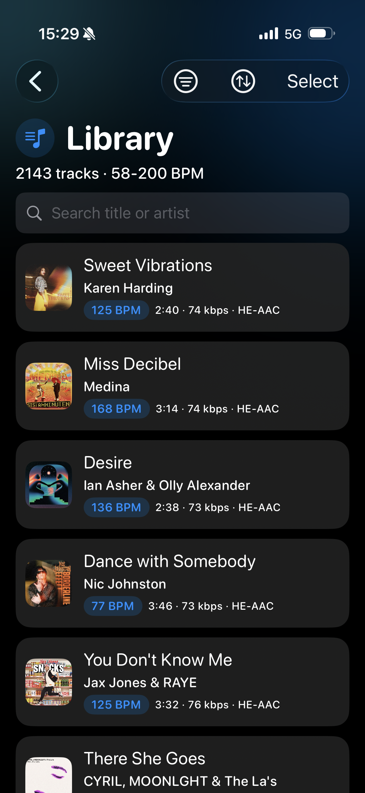

Run2Beat
Your music. Your workout. In sync.
Run2Beat is the joy of working out to the music library you’ve built up yourself — at exactly the right pace. Import your own audio files, let the app analyze each track’s BPM, and build playlists that match the tempo of your run, ride or powerwalk.
Or just build a standard playlist and listen because you want to.
Free · Ad-free · Works fully offline
Build your library

Bring your
own music.
Import your own audio files (MP3, AAC and other common formats) from iCloud, your phone, or an external drive. Run2Beat recognises every file so the same track is never imported twice — only unique files end up in your Library.
Missing a title or cover art? Run2Beat can identify tracks via Shazam and fetch the right metadata automatically.
Know the tempo

Every track,
its true tempo.
Run2Beat calculates the tempo (BPM) of every track directly on your phone — no cloud uploads, no analysis queue. Tracks with an uncertain tempo are clearly flagged so you can review and correct them before your next session.
Always in control of the beat.
Two ways to play
BPM lists & standard playlists.
Run2Beat treats both kinds of playlists as first-class citizens — because a workout and an evening walk aren’t the same thing.

For workouts
BPM lists.
Build dynamic playlists where each track gets a target tempo. Run2Beat doesn’t continuously fine-tune playback during the workout — the tempo is set per track. When you sync a BPM list to your Apple Watch, your own music files are BPM-adjusted up front, without distorting vocals.

For everyday listening
Standard playlists.
Want to listen without BPM constraints? Build classic playlists from any of your imported music — for the commute, the dog walk, the kitchen, or just because.
Same library. Same audio quality. No tempo required.
Sound quality
Make it sound
the way you want.
Three small touches that quietly disappear once you press play.
Volume normalisation
Stop reaching for the volume control. Run2Beat measures the loudness of your music so older recordings and modern mixes play at the same level — on iPhone and Apple Watch.
Equalizer
Sculpt the sound with the built-in equalizer. Save presets for different headphones and sync them to your Apple Watch.
Crossfade
Built-in crossfade keeps the music flowing without awkward gaps between tracks — both on iPhone and Apple Watch.
Take it anywhere

Leave the
phone home.
Sync BPM lists and standard playlists directly to your Apple Watch — full standalone playback during your workout. Crossfade, EQ presets and volume normalisation all come along for the ride.

Share the
whole playlist.
Found the perfect workout flow? Send a whole playlist — pre-analyzed audio and Shazam metadata included — to a friend via AirDrop. They get the music, the order, and the tempo. Ready to play.
Everything that matters.
Nothing that doesn’t.
A short tour of what’s actually inside Run2Beat.
Get Run2Beat
Free. Forever.
Offline.
Run2Beat is free, ad-free and works fully offline. Your music files and BPM data stay on your device — nothing ever leaves your iPhone. No subscription. No account.
Open in TestFlightYou bring the music. We bring the tempo.